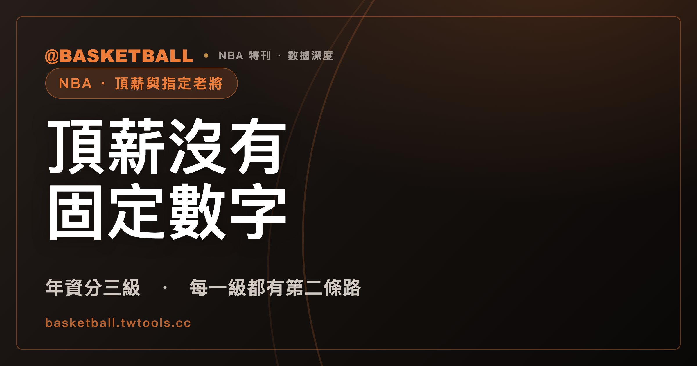

頂薪沒有固定數字：NBA 首年薪資上限由年資級距、前一份合約與獎項門檻算出
「頂薪」是中文慣稱，2023 NBA CBA 條文寫的是 Maximum Annual Salary，也就是單一球員合約的首年薪資上限。條文給的是依年資分三級的帽值百分比，加上與前一份合約末季薪資 105% 取高的算法，再疊一組獎項門檻（Higher Max Criteria）；指定老將（Designated Veteran Player）的資格就建在這組門檻之上。

新手村｜NBA・頂薪合約與指定老將
「頂薪」聽起來像一個固定金額，翻開條文，看到的卻是另一種寫法：百分比、年資、前一份合約，還有一串獎項。讀完這篇，你應該能自己分辨「年資級距的上限」與「獎項門檻的上限」是兩件事，也能拿一個標明「假設」的球員情境，逐項對照 2023 NBA CBA 的條件，判斷該從哪一條路徑讀起。
文中所有規則與數字，除特別標示外，都依 2023 NBA CBA（NBA 與球員工會的勞資協議）。本文不寫任何美元金額，也不寫任何真實球員的合約；帽線、稅線、apron 與各種例外的基本概念，請看本站的薪資帽入門。
「頂薪」是中文慣稱，CBA 條文寫的是首年薪資上限
依 2023 NBA CBA Art. I(gg)，Maximum Annual Salary 指球員在合約或延長期的第一個 Salary Cap Year 可以領到的薪資與 Unlikely Bonuses 的上限，算法依 Art. II §7。Art. II §7(a) 則規定：2023 CBA 生效日當日或之後簽的球員合約，首年的薪資加 Unlikely Bonuses 不得超過該條列出的金額。
也就是說，這一組條文管的是「第一年」。之後每年的薪資怎麼增減，由另一組條文（Art. VII §5）規定，後面會談到。
「頂薪」「25% 頂薪」「35% 頂薪」都是媒體與球迷的慣稱，不是規則書的用語。另外還有「Rose Rule」「supermax」這類說法，在本站取得的 2023 NBA CBA 全文文字檔中搜尋這兩個詞，結果都是 0 筆；CBA 對指定老將用的是 Designated Veteran Player Contract 與 Designated Veteran Player Extension。這只說明這兩個詞不在條文裡，並沒有否定球迷使用它們的習慣。
首年上限依年資分三級：帽值的 25%、30%、35%
依 2023 NBA CBA Art. II §7(a)，首年上限依年資（Years of Service）分成三級，百分比的分母是「合約簽訂當時生效」的薪資帽（Salary Cap）：
| 年資（Years of Service） | 首年上限的百分比部分 | 條文位置 |
|---|---|---|
| 未滿 7 年 | 薪資帽的 25% | Art. II §7(a)(i) |
| 滿 7 年、未滿 10 年 | 薪資帽的 30% | Art. II §7(a)(ii) |
| 滿 10 年（含）以上 | 薪資帽的 35% | Art. II §7(a)(iii) |
Art. I(mmm) 對 Salary Cap 的定義，是每支球隊在一個 Salary Cap Year 內允許的球隊薪資總額上限，受協議內其他規則與例外約束。帽值是依 Salary Cap Year 訂的，而百分比的分母取的是簽約當時生效的那一個，所以百分比換算成金額，會跟著簽約當時的帽值走。本文的讀法是：CBA 條文給的是一組算法，本文引用的條文裡沒有出現一個寫死的金額。
年資怎麼算？依 Art. I 的定義，球員在某一年例行賽期間，只要有一天以上出現在 NBA 現役名單（Active List）或傷病名單（Inactive List）上，就記為一年 NBA 年資。
延長合約（Extension）與重新談約（Renegotiation）也出現同一組級距：Art. II §7(b)(ii) 對年資滿 7 年但未滿 10 年的重新談約給 30%，Art. II §7(c)(iii) 對年資滿 10 年以上的延長合約給 35%，只是延長合約的分母改成延長期首年 7 月 1 日所在 Salary Cap Year 的帽值。
每一級都有第二條路：與前一份合約末季薪資的 105% 取較高者
三級的條文都不是只寫百分比。依 Art. II §7(a)(i)–(iii)，每一級的上限都是兩個數字中「較高者」（the greater of）：
- (x) 薪資帽的 25%、30% 或 35%（依年資級距）；
- (y) 前一份合約末季薪資的 105%。
因此，百分比只是其中一個候選數字。下面用一組抽象的假設數字，示範「取較高者」怎麼運作。假設薪資帽是 100 單位（單位是為了示範隨手設的，不是任何一個賽季的真實帽值，也不是美元），某位年資未滿 7 年的球員：
- 假設他前一份合約末季薪資是 10 單位：25% 是 25 單位，105% 是 10.5 單位，取較高者是 25 單位。
- 假設他前一份合約末季薪資是 40 單位：25% 還是 25 單位，105% 是 42 單位，取較高者是 42 單位。
這兩個算例都是為了說明條文結構而設的假設，不代表任何真實合約。它們也說明了一件事：只知道年資級距，還算不出這名球員首年上限的實際數字，要再看他前一份合約的末季薪資。
年資滿 4 年的球員，達成獎項門檻後，可從原球隊拿到至多 30% 的首年帽值
未滿 7 年這一級的條文（Art. II §7(a)(i)）附了一條但書。依這條但書，若球員在他球員合約涵蓋的末一個球季結束後的 6 月 30 日，年資滿 4 年（條文稱這類球員為 5th Year Eligible Players），而且在其後 7 月 1 日時，達成下列至少一項獎項門檻（Higher Max Criteria），就有資格從原球隊（Prior Team）領到至多 30% 的帽值（簽約當時生效的帽值）。條文列出的門檻中，本文摘出兩項：
- (A) 於上一季，或前三季中的兩季，入選 All-NBA 第一隊、第二隊或第三隊，或獲選 Defensive Player of the Year（DPOY，年度防守球員獎）；
- (B) 前三季中的任何一季獲選 NBA MVP。
條文的用語是「至少達成下列一項」，本文只摘 (A)、(B) 兩項，完整的門檻清單請以條文為準。
Art. II §7(c)(i) 的但書另外規定，簽了新秀延長合約（Rookie Scale Extension）的 5th Year Eligible Player 若達成同一組門檻，百分比由球隊與球員協議，介於 25% 至 30%；新秀合約的長度與選秀順位的關係不在本文範圍，請看選秀樂透入門。Art. II §7(g) 還規定：這類合約若首年薪資超過帽值的 25%，必須涵蓋至少 4 個球季（不含 option year）。
指定老將合約：年資 8 或 9 年、留在首次簽約的球隊、且達成一項獎項門檻
年資滿 7 年未滿 10 年那一級的基準是 30%（Art. II §7(a)(ii)），這一級的條文也附了但書。依這條但書，指定老將合約（Designated Veteran Player Contract）的其中一條資格路線要同時符合三件事：
- 簽約當時年資是 8 年或 9 年；
- 這些年資是為「第一次簽球員合約的那支球隊」服務的；若他在這段期間有過不只一支球隊的球員合約，換隊必須只發生在他前四個 Salary Cap Year（有球員合約在身的年度）內，而且是經由交易；
- 簽約當時，已達成至少一項獎項門檻（Higher Max Criteria）。
三項都成立的球員，有資格簽指定老將合約，自原球隊領到簽約當時帽值的至多 35%。中文「指定老將」是譯名，不是 CBA 用語；CBA 原文是 Designated Veteran Player。
Art. I(q) 對這種合約的定義補了幾個細節：對象是 Qualifying Veteran Free Agent，合約涵蓋 5 個球季，首年薪資是高於 30%、不超過 35% 的帽值百分比，由球隊與球員協議。Art. II §7(a)(ii) 的這個但書後面接著「or」，後面還有條文接續，本文沒有引用，所以本文只寫這一條路線，其餘請以條文為準。
年資、球隊與獎項門檻是三個各自成立的條件，缺一項，這條路線就對不上。
指定老將延長合約：年資 7 或 8 年、剩 1 或 2 季，簽下來涵蓋 6 個球季
指定老將另有一條延長合約路線（Designated Veteran Player Extension），年資條件與合約不同。依 Art. II §7(c)(ii) 但書，資格是同時符合：
- 現行合約還剩 1 個或 2 個球季（含 option year）；
- 簽延長約當時年資是 7 年或 8 年（條文用括號說明：也就是進入 NBA 第 8 或第 9 年）；
- 這些年資是為首次簽球員合約的那支球隊服務的（換隊例外的細節以條文為準）。
再加上至少達成一項獎項門檻，球員就有資格簽指定老將延長合約，百分比由球隊與球員協議，不得低於 30%，也不得高於 35%（以延長期第一個球季所在 Salary Cap Year 的 7 月 1 日帽值計）。Art. II §7(e) 再申明一次：這個百分比「無論如何」不得低於 30% 或高於 35%，而且這種延長合約不得包含 Incentive Compensation。
兩條路線放在一起看：
| 項目 | 指定老將合約 | 指定老將延長合約 |
|---|---|---|
| 簽約時的年資 | 8 年或 9 年（Art. II §7(a)(ii)） | 7 年或 8 年，且現行合約剩 1 或 2 個球季（Art. II §7(c)(ii)） |
| 涵蓋期間 | 5 個球季（Art. I(q)） | 自簽約日起 6 個球季（Art. I(r)、Art. IX §1(d)） |
| 首年百分比 | 高於 30%、不超過 35%，雙方協議（Art. I(q)） | 不低於 30%、不高於 35%，雙方協議（Art. II §7(c)(ii)、§7(e)） |
| 獎項門檻 | 簽約當時至少一項 | 至少一項 |
年資 8 年同時落在兩欄的範圍內；實際能走哪一條，還要看合約還剩幾季等其他條件，本文不往下推。兩條路線的年資條件不同：合約看 8 或 9 年，延長約看 7 或 8 年。
一般合約與指定老將合約：年限、年度加薪、交易與談約時點各有各的條文
前面談的都是「首年」。合約簽下之後的規則，依 2023 NBA CBA 整理如下：
| 項目 | 一般球員合約 | 指定老將合約／延長合約 |
|---|---|---|
| 合約年限 | 上限 4 個球季；Qualifying Veteran Free Agent 與原球隊簽的合約，可到 5 個球季（含 option year）（Art. IX §1(a)） | 合約涵蓋 5 個球季（Art. I(q)）；延長合約必須涵蓋自簽約日起 6 個球季（Art. IX §1(d)） |
| 之後每年薪資增減 | 一般合約（不是 QVFA／EQVFA 與原球隊簽的）：上限為首年薪資的 5%（Art. VII §5(a)(1)(i)(A)） | 指定老將合約依 Art. VII §5(a)(2)：8%（Art. I(q)）；延長合約依 Art. VII §5(a)(3)：8%（Art. I(r)） |
| 簽約後被交易 | 本文未引用一般合約的對應條文 | 簽約日起一年內不得被交易（Art. VII §8(f)(ii)） |
| 談約時點 | 本文未引用 | 延長合約不早於原合約簽訂滿三週年，且只能在休賽季談簽（Art. VII §7(a)(1)） |
用假設算例把加薪幅度換算成帽值的百分比。這裡是算術推得的結果，不是條文原句。假設薪資帽是 100 單位（示範用，不是真實帽值）：
- 假設某份延長合約的首年是帽值的 30%，也就是 30 單位。之後每年增減上限是首年薪資的 8%，也就是 30 乘 0.08，等於 2.4 單位，相當於帽值的 2.4%。
- 假設某份一般合約的首年是帽值的 25%，也就是 25 單位。之後每年增減上限是首年薪資的 5%，也就是 25 乘 0.05，等於 1.25 單位，相當於帽值的 1.25%。
表中的每一條規則，各自依自己的條文成立；本文不把指定老將的獎項門檻與 8% 的年度增減連成因果。交易規則本身（例如薪資對應）請看交易規則入門。
拿三個假設情境，自己判該讀哪一條
以下是編輯建議的檢查順序：先判年資落在哪一級，再看前一份合約末季薪資，末了看有沒有獎項門檻與指定老將資格。三個情境都是假設，不指任何真實球員或球隊；帽值同樣假設為 100 單位。
假設情境甲：年資 6 年，前一份合約末季薪資 10 單位。
假設情境乙：年資 9 年，年資全部為首次簽約的球隊服務，簽約當時已達成至少一項獎項門檻，要簽新合約（並假設他符合 Art. I(q) 所指的 Qualifying Veteran Free Agent 身分，本文不展開這個身分的認定）。
假設情境丙：年資 8 年，已達成至少一項獎項門檻，但他是在前四個 Salary Cap Year（有球員合約在身的年度）之後，才經交易換到現在這支球隊。
對照 2023 NBA CBA 的判讀：
- 情境甲：年資未滿 7 年，落在 25% 這一級（Art. II §7(a)(i)）。前一份合約末季薪資的 105% 是 10.5 單位，比 25 單位低，取較高者是 25 單位。
- 情境乙：年資 9 年，落在 30% 這一級（Art. II §7(a)(ii)），一般路徑的首年上限是帽值的 30% 與前一份合約末季薪資 105% 的較高者。因為年資 9 年、年資都在首次簽約的球隊、又達成一項獎項門檻，符合前面談的指定老將合約路線，首年百分比可以高於 30%、至多 35%，實際數字由雙方協議。
- 情境丙：換隊發生在前四個 Salary Cap Year 之後，對不上前面所列指定老將合約資格路線的第二項。條文在這條路線後面接著「or」，本文沒有涵蓋後面的情形，所以這個情境只能說「本文引用的這條路線對不上」，無法單憑此判斷他能不能簽指定老將合約。
自己拿一個情境來判時，可以先確認「年資」與「年資是在哪支球隊累積的」，兩項確認之後再看百分比。
實際帽值金額與球員合約案例，不在範圍內
本文有幾件事沒有處理：
- 各賽季的薪資帽金額：本文引用的資料不含任何賽季的帽值，因此沒有任何美元換算。要把百分比換成金額，需要另外找當季官方公布的 Salary Cap。
- 真實球員的合約金額，以及誰拿到指定老將合約：這類屬於新聞，本文不寫。
- 版本範圍：全文依 2023 NBA CBA，不含之後的修訂。Art. VII §8(f) 中也有依賽季（例如 2024-25 Salary Cap Year 之前簽的延長合約）區分的條文，那是針對其他延長合約的另一款，與指定老將一年限制所在的 §8(f)(ii) 分開讀。
- 新秀延長合約 25% 至 30% 的完整機制，以及 trade bonus（Art. II §7(f)）：本文只點到，沒有展開。
常見問題
頂薪就是薪資帽的 35% 嗎？
條文給的不是單一數字。依 2023 NBA CBA Art. II §7(a)，NBA 單一球員合約的首年上限依年資分三級：未滿 7 年是薪資帽的 25%，滿 7 年未滿 10 年是 30%，滿 10 年以上是 35%，而且每一級都是與「前一份合約末季薪資的 105%」取較高者。35% 這個數字，在本文引用的條文中出現於年資滿 10 年以上那一級，以及指定老將合約與延長合約的上限。「頂薪」是中文慣稱，CBA 的用語是 Maximum Annual Salary。
指定老將要符合什麼條件？
依 2023 NBA CBA，指定老將合約（Art. II §7(a)(ii) 的一條路線）要求簽約時年資 8 或 9 年、年資是為首次簽約的球隊累積（換隊只限前四個 Salary Cap Year 內的交易），並且簽約當時至少達成一項獎項門檻（Higher Max Criteria）；指定老將延長合約（Art. II §7(c)(ii)）要求現行合約剩 1 或 2 個球季、年資 7 或 8 年、年資同樣是為首次簽約的球隊累積，並至少達成一項獎項門檻。兩者的年資條件不同。條文在 §7(a)(ii) 的這條路線後還接了別的情形，以上不是完整資格清單。
「Rose Rule」與「supermax」是 CBA 的規則名稱嗎？
在本站取得的 2023 NBA CBA 全文文字檔中搜尋這兩個詞，結果都是 0 筆，所以兩者不在 2023 NBA CBA 的用語裡。指定老將合約與指定老將延長合約在 CBA 裡的英文是 Designated Veteran Player Contract 與 Designated Veteran Player Extension。這個結果只涵蓋 2023 NBA CBA 的文字，不涵蓋其他文件或球迷社群裡這兩個詞的用法。
簽了指定老將合約，可以馬上被交易嗎？
依 2023 NBA CBA Art. VII §8(f)(ii)，簽指定老將延長合約或指定老將合約的球員，自簽約日起一年內不得被交易。Art. VII §8(f)(i) 另有針對其他延長合約的規定，不屬於這一款。
資料來源
- 2023 NBA Collective Bargaining Agreement（2023 NBA CBA）：Art. I（Definitions，本文用到 (gg)、(iiii)、(mmm)、(q)、(r)、(yy)）、Art. II §7（Maximum Annual Salary 與 Higher Max Criteria）、Art. VII §5、§7、§8(f)、Art. IX §1、Art. X（Award Eligibility Grievance）。本站取得的是本機保存的全文文字檔，沒有可點擊的公開網址；取得日 2026 年 9 月 29 日。